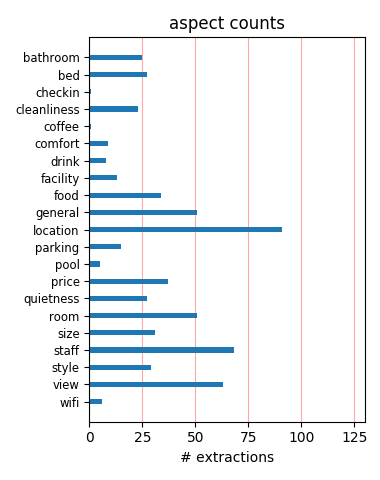
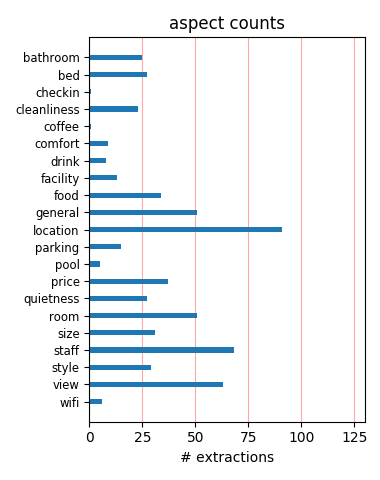

Decent hotel, nothing wow, but okay Staff was nice, room was standard, location was good for area walking to restaurants. There on biz and certainly suited my needs. Valet at $50 per day a little high, but hey it's SF.
Nice Stay Purchased on Priceline for $80.00 (Thurs-Sat) This hotel was previously a Holiday inn. They have done a nice remodel. Watch out for room 25 on each floor. Very small window. This hotel is directly across the street from Chinatown which was fun.
Great if you get a good deal Paid 100 usd a night for a double through a hotwire deal, and were very happy with that. Great location, very nice lobby bar, and beautiful rooms with the best beds we've had away from home. Handy for parking. We didnt use many of the facilities.
Very Nice Rooms We only spent 1 night at this hotel but it was memorable.The room had a great view of Coit Tower, the bed was very comfortable, the furniture was very nice, the towels were great, etc.Parking is $42/day + tax but heh, it's San Francisco.We will stay here again.
Good solid business hotel Stayed at the new Hilton San Francisco in the China Town/Financial District for business. I enjoyed the stay and the staff I found to be friendly and engaging. The rooms were light and airy - but the furniture seemed to be a little cheap (not Hilton standard). For the price and location I'd stay again.
Very unimpressive hotel The hotel looks nice, but that's where the plesant experience ends. The staff are unexceptional, there is no fridge in the room. How can a hotel be four stars without a fridge in room? The rooms were otherwise tiny, valet parking is 42 dollars a night!! 4 stars is not an appropriate rating for this place, 3 star is more appropriate.
Ew. This is definitely not a four star hotel. Our shower didn't work, the TV broke during our stay and just getting an elevator to your floor was a huge hassle. After calls to the front desk, the first two problems were eventually fixed. But the customer service did not go any farther than that. My companion actually had one hotel representative be down-right rude.
Great Place to stay Stayed here for 3 nights....loved it. Great views over SF, nice and friendly staff. Close to Chinatown, a short walk to the Pier and a 10 minute walk to Union Square too!Rooms are nice a new. Had no problem with noise at all. Yes you hear a bit of city noises, but that all adds to the expierence of staying in the middle of SF.Would recommend it.
Small beds My husband and I stayed at the hotel for 3 nights. The hotel is newly renovated. Our only real issue is that they gave us a full sized bed for double occupancy. It was a bit too small for us. Additionally the shower head was way to low, probably better suited for someone 5'4 or under.Although the hotel name reads the financial district, it is located in the heart of China Town.
Nice decor, very loud. We booked this hotel through Priceline, so for the money, a great deal. Would not give this hotel a 4 star rating, more like 3. The rooms are very nicely decorated, hotel is in great location to Chinatown and North Beach. However, the outside noise at night is terrible. We were on the 6th floor overlooking an alley, so maybe a higher floor wouldn't have been as bad.
Very Average Parking is offensively expensive! $48.00 per night vs. $26.00 across the street. The location was bellow average. It is in the heart of Chinatown, a car ride to everything a vacationing family would like to see (Fisherman's Wharf, Union Square, Shopping, non Chinese food etc....) No cotts or roll away beds available in the double room. Room itself was nice, clean and comfortable.
holiday inn its close to everything. Cab was ~7bucks for 2 from the hotel to most of the attractions. Staff was avg. Our room was small b/c booked through priceline. Did not like the Mattress at all (woke up with achy back each day) got 12th floor...facing chinatown. no complaints about that. rooftop pool was great. I expected it to be heated but was not. If I could I would try to avoid it next time
Book a high floor we stayed here long time ago but, I hope my review is useful anyway. The location is very good, pretty central, I would say 10-15 minutes walking from market street, Union sq, embarcadero, good restaurants, so location is OK. We booked a high floor with views to the bay and Alcatraz and this was fantastic. I think we paid I paid about 120 USD and, for this price, is very, very good.
Good location, but noisy. I am currently staying at this hotel, and the room is clean and has apparently been through a renovation and is well appointed. Neverthless, you can clearly hear the noise from the street as the big window offers sub-par noise isolation. Being in the downtown area of SF, at night it does interferes with sleep, at least for me. The location is great. Concierge lounge is so, so.
Nice but.... Nice lobby, full of business execs day and night though. Good, central location for shopping etc. Our room was about 10 minutes walk away from the lobby, which seemed a bit excessive, and very small. The bathroom was so small a toothbrush would barely sit on the tiny shelf! Small bed too (4 ft). I wouldn't recommend this for a couple at all, find somewhere with a bigger room and a less businessy vibe.
Average I stayed at this hotel for 2 nights when in San Francisco. As a Hilton Diamond got upgraded to executive floor. Room was spacious and well decorated. Executive lounge was not the usual Hilton Standard and the continental breakfast was sparce compared to many Hilton Executive Lounges in USA. It is very much a business hotel and other hotels eg Westin are much more central and better value for money.Average nothing special.
Nice Stayed for ten nights. The hotel is very clean and newly refurnished. The rooms are quite big. There are no minibars in the rooms, but there are coffee making facilities. There is an icemaker on every floor. The gym was quite small but modern. I personally like staying in a hotel that is not in the middle of union square. Besides the walk to union square is only ten minutes. I wouldn't stay here again because I need a minbar.
Fab Views We stayed at the Holiday Inn for a few days at the end of April, found the staff very helpful and were lucky enough to get a high floor room, so the views of the bay were fantastic. The Lobby Bar was also very pleasant for a drink. The Hotel is in a good location, about 10 minutes walk from Union Square for shopping and about 10 minutes walk from North Beach for some lovely restaurants. Overall a very clean and pleasant hotel.
What a view! We booked this through Priceline and got a fantastic rate, but I would definitely pay more to stay here again - if I could get the view I got. It was a million-dollar view of Coit Tower, Alcatraz, Embarcadero, Nob Hill, St. Peters and Paul Cathedral. The room was not overly large or special, but it was clean and current.Service was fantastic from the reservation desk to the bellman. Location is great for hitting China Town and North Beach. A feal find.
So Comfortable We stayed at the Hilton in September 2007 for 5 nights and found the Club room we stayed in to be very comfortable, clean and quiet. The only problem was we coudnt get a room until 3:15. I realize check in is a 3pm but after sitting on a plane for 13 hours it would be nice to get your room after 1:30pm when you arrive. Apart from that we found everyhtihing else very satisfactory and the staff courteous and helpful. Would definitely stay there anytime..
Much more than expected!!! The newly renovated room is chic; the room has free Crabtree Evelyn products (shampoo, rinse, etc.) and the bedding was very comfortable. Even the restaurant food is much better than what you'd expect from a hotel restaurant. When we went they had live vocal Jazz at the bar which set the right ambience. And very friendly service!!! The building itself looks quite run down from the outside but you'll be amazed at how new and comfortable it is inside.
Excellent Hotel This hotel is fantastic. The accomondations are beautiful, the bedding is like sleeping on a cloud. Had a beautiful view of Coit Tower. This hotel is located in Chinatown, and is walkable to Fisherman's Warf. This is a hotel that I plan on returning to.The bathroom is small but very nice. The only downside is the shower would be difficult for a very tall person. But the room is very nice. The lobby is beautiful. The staff were very professional and accomodating.
Noisy on Weekend Just spent 5 days at Hilton with wife and two teenagers. Had a room on 9th floor overlooking Coit Tower and the Bay. Good location close to Chinatown and Little Italy. Nice room although small. Staff was friendly although I often had trouble finding someone at the Concierge desk. Biggest complaint was the street noise especially Friday and Saturday nights. If you do stay there and even if you don't, make sure you have dinner at House of Nanking on Kearny - excellent!
Thin Walls The location is great, and the decor nice enough, but the walls, I agree were thin and you could hear your neighbors walking around. The toilet flushed real slow, like it was barely working. The room itself seemed rather small, I think it was the desk along the wall that took up most of the space. The elevators were irritating, you had to enter your key just to get up to any of the room floors. It wasn't a bad stay, but I definitly would spend my money elsewhere in the future.
Good Restaurants Next Door Very pleasant, spectacular view (from North side rooms) and very pleasant service at front. Breakfast was good, but not the very best that Hilton has to offer. However, if your are adventuresome, the family run Cantonese Garden Restaurant next door offers great, cheap, cooked-to-order breakfast (American or Chinese). Also, next door in the alley is Alfred's, a wonderful, traditional (expensive) San Fransisco steak house. I have posted pictures of both establishments.
Great hotel next to Chinatown! This is the 4th time I have stayed at this hotel, Sept 14-19, and I am always impressed by the view (Coit tower and SF Bay Sausalito), the size of the rooms, and the friendliness of the staff. Plus free WiFi! The only drawback is the expense of valet parking, which you can solve by parking in the lot across the street. I brought my bike and kept it in the room with no hassle. You can bike all over town via the Embacadero a few blocks to the east. Highly recommend!
Very Good Hotel This was a very good hotel with large clean rooms with friendly and helpful staff. It was an interesting (one mile) downhill walk to Fisherman鈥檚 Wharf and it is just at the edge of the Chinatown district. My only criticism was the hotel restaurant called 750 off the lobby; on the one occasion I ate there the only other patron sent back her food and I was tempted to the same 鈥?it was awful. However, there are so many other great restaurants nearby that this should not be a problem.
Great everything Our family stayed in 2 rooms for 2 nights.The service was lovely (when we needed a toothbrush in the middle of the night it arrived within 10 minutes), the rooms wonderful (such beds! we didn't want to get up), the view through the large windows were spectacular, the location perfect (next to Chinatown, walking distance to many sights, convenient for walking) and Eric the concierge is great. The only thing we missed was a small fridge in the room.We very much recommend this hotel.
Great location, views We recently stayed at this Hilton on Kearny St. (3/23/07). It has recently been remodeled and looks beautiful, very modern and super clean. This hotel is actually closer to Chinatown than it is to the Financial District. It is a great location - close to North Beach, Union Square and Chinatown. We stayed on the seventeeth floor. Our room (1717) had a great view of the bay, Coit tower and the St. Peter Paul Church Spires. It was a little pricier but so worht it if you are into views.
Great Value! Remember to use your Hilton Honor. I stayed there for two nights. I booked through priceline (less than $190 for two nights, including tax and fees). The hotel was at a great location. I parked in a garage right across the street ($26/day). They didn't mention priceline but I did show them my Hilton Honor number. I was given a room at 15th floor with a beautiful half-bay and half-city view. The wall is thin and you could hear the street noise. However, I am very satisfied with the price I paid.
Clean Rooms We stayed at Holiday Select for three nights. The location was good. The breakfast was good and fast. The business center was open 24 hours but not real easy to locate. It is on the top floor. I was able to locate it and check e-mail. The hotel is located downtown so I was not surprised to see some homeless in the park across the street - usual for most cities. There were hotel staff outside almost 24 hours and the lighting is good. Overall a good clean place to stay. I would stay at this location again.
Newly Renovated Modern Hotel Good location for downtown meetings. Lots of interesting neighborhoods to wander thru. I was told the hotel is only a year old, totally renovated, and it shows. Everything is clean and new. Very modern design. My only complaint would be the noise from the big windows, also, pull down shades instead of curtains allow light in around the side which is a problem for people like me who can only sleep in complete darkness, luckily the beds are great so you can try to get a good nights sleep. Free wireless internet.
Terrible Hotel hotel service is terrible. no housekeeping provide and we have to use old bed sheet that we used the day before. Try not to stay in this hotel. only 2 star or less terrible terrible teriible.......................................................................................................................................................................................................................................................................................................................................................
So-So Hotel The hotel itself is fine, with decent rooms and a convenient location. However, we found the staff to be very unhelpful. When we asked the conceirge a question about nearby attractions, we were handed a map and given no other advice. We had called a month prior to our trip to make a few requests, upon arrival we had to make all of these requests over again. They tried to cram us into a tiny double room, instead of the King Room that we had booked. Booked through Priceline for a good deal, otherwise wouldn't choose the hotel again.
Great View of Coit Tower and Alkatraz Weekend retreat at the Hilton was just what the doctor ordered. Stayed on the 25th floor with a Bay View... The hotel was very clean, beds were super. The staff was very nice. From the maids to the bellmen. Received an early check-in... front desk asst. manager was very nice - Thank you!!Our room had an incredible view of Coit tower and Alkatraz Island in the background. We we able to walk to Union Square via Chinatown...right down Grant. Fun! Walked to dinner in North Beach. Thank you to everyone at the Hitlon - great job!!
Great Stay Just stayed at the Hilton Financial District. Great hotel, staff was very nice and the best part was that there was a playground and park across the street! Chinatown was literally across the street. Everything was an easy walk.I didn't give it a five star because the room service menu was limited, there was not a pool (there used to be one 1.5 years ago), and there was no gift shop/snack shop. The bell service and restaurant staff were top notch. The front desk staff were not so friendly compared to everyone else. The view of downtown from the windows was amazing.
Outstanding view of SF skyline towards Coit Tower Not necessarily an obvious choice for tourists but we very much enjoyed our stay at the Hilton Financial District. Location is good in the middle of China Town, within walking distance to Little Italy and close enough to the main attractions. Room had a superb view on the Bay (Alcatraz, Coit Tower, Bay Bridge, etc.). Amenities were good, certainly up to the standards of Hilton. We did not need any particular assistance from the staff, so can't really comment, but the hotel seemed to be operating well.Overall, I would certainly recommend it.
Perfect place for visit to SF Loved this hotel!! Got a fantastic rate through hotwire.com. Loved the location, on the edge of Chinatown, North Beach (Little Italy) and financial district/downtown. The room was perfectly appointed....super comfy bed, great club chair and ottoman for sitting/reading/watching TV. Excellent desk and features for biz travellers, even though I wasn't on biz this trip. Loved the individual Lazza (?sp?) coffee maker in the room - terrific coffee! The staff was very nice and helpful when needed. This hotel worked out very well for me and I'd recommend it to anyone.
Reasonable Hotel We stayed here late August 04 for three nights, the views of the bay were fantastic. The roof top pool was the main reason we booked this hotel and it did not disapoint. Views of Alcatraz and the Transamerica building made it very worth while. The room was reasonable and clean, it was not anything special. The bed was fine but order extra pillows!The food was very good if not a little expensive, but this is an expensive busy city. The parking was an added bonus, and the cable car stop was a few blocks away, not too bad in the day but we did feel a little uncomfortable at night!
Nice place - Bad Shower The Hilton in the Financial District was a great deal at $189 a night. The room was clean and well appointed. The breakfast was excellent. I was here for a conference, and the catering was also very good. If I were coming back for a personal visit, I would definitely consider this hotel, especially since it has a Spa in the building. The only downside was the shower. I am 6'1, and the shower head was at my neck Very annoying. I was assured by the staff that they are in the process of retrofitting all of the rooms. I have to wonder why they are at that height in the first place.
Fantastic views Stayed in this hotel a while ago now but could not believe some of the negative views here so wanted to add my own. We stayed here for three nights when we first arrived in San Francisco. The room we had was big and clean - if a little dated in decor. Loved the bar - very 1970's vibe to it. The location is fantastic - right on the edge of Chinatown and the financial district - easy walking to North Beach. The best part however is the roof top pool. The views from here are just breathtaking. We would definitely stay here again if we came to San Fransisco again - really good value for money.
Wonderful stay! We booked this hotel thru priceline for a great deal. When we arrived, we needed to drop our stuff off and then return our rental car. They wouldn't let us leave the rental car outside for 10 minutes which created some problems. After the car debacle, it was all smooth sailing. The lobby is modern and clean. The check in was friendly and quick. We loved our room, very comfortable beds. The location was pretty good, right on the outskirt of Chinatown a pretty easy walk to the wharf. We walked to everything. On our last night we were too exhausted to go out and had drinks at the hotel bar. It is a very chic bar.
Classic Hilton service, nice location You'll find everything you should expect from a Hilton. Great service, perfectly clean, and the location is excellent, a block from Chinatown and great restaurants, 4 blocks from a cable car stop. The only bad point is for parking. Valet parking is $47 a day, which is bordering on absurd. I parked the car myself in the same lot the second day for $25. They did charge me for 2 days of valet parking, but corrected the bill without any question. I didn't fond the rooms to be so small. Every room seems to have a great view. I had a great deal of $79 with Priceline, and that's unbeatable for SF.
Great Views Standard rooms with great views. We asked for a high floor with bay views and were delighted when we had a good view of Alcatraz Isalnd from our room on the 22nd floor. Further great views can be had from the roof top pool which is perfectly adequate. The rooms are a good size with all the usual facilities and the reception staff were polite and helpful. As with most places in San Francisco parking is expensive. The hotel is within walking distance of China Town and a short taxi or cable car ride to Fishermans Wharf. I chose this hotel for the views and roof top pool more than anything else and was not disappointed.
Best Kept Hotel Secret in San Francisco This is the only place I stay in S.F. the view from the higher floors in any of the rooms-either Sausalito, Alcatraz and Coit Tower, or downtown to the Trans America building- are amazing and a delight -in most instances, you'd be hard pressed to get a million dollar view like this at any of the top dollar hotels on Nob Hill! The rooms are spotless, recently renovated, and the decor rivals far more expensive chains. Staff is helpful, not overly friendly-no complaints there. But the location-at the corner of Chinatown and North Beach a short walk to Union Square, and the Embarcadero, SIMPLY CANNOT BE BEAT!
Perfect central location-better than avg hotel I stayed at this hotel at the end of October and would suggest it to others because of its location and value. We walked everywhere from this hotel and thought it was perfect for its central location. We did not eat at the restaurant but stopped in the bar a few nights which was quite nice with very good bartenders. On the downside, and its been mentioned in other reviews, the elevators are very slow during peak times and the walls are paper thin. The shower in the room next door sounds like its in your room. The room size is very good and the amenities are average. The bay view rooms are beautiful.
There's nothing like the Hilton bed I loved this hotel. It was a great location for us, because we are walkers. We were able to get everywhere we wanted to go -- Wharf/Pier 39, Embarcadero, Union Square, the BART station, etc. -- within an easy walk. We booked on Hotwire and even though parking was an astronomical $42 a night, it still made it about the same price as the hotels with free parking. The bed alone was worth it -- soooo comfortable. As the previous poster said, it's actually more Chinatown than Financial District; but that was OK with us. Don't be afraid of the nudie bars and shady characters that you may see just outside -- they're harmless.
This place is hazardous to your health! This place is filthy! Empty wine and alcohol bottles were found on top of the closet, a used condom between the bed and wall. I asked to change rooms and was told none were available. At least they sent a maid to clean up. The closet door fell off with huge screws exposed - I could have seriously cut myself. I called the front desk to have them fix it the next day, they never fixed it! When I called the second day to request another room, I was told the same thing. They did not even offer to upgrade me. DO NOT STAY HERE! So so service, the place is falling apart, and the staff does NOT care about you or your safety.
Surprisingly nice This Hilton is on the fringe of Chinatown and adjacent to North Beach, known for its Italian restaurants. Upon arrival, the neighborhood didn't appear to be very attractive; it's busy, commercial and a bit noisy. But the location proved to be a winner. We strolled into Chinatown for lunch, strolled into North Beach for dinner and strolled a short way to catch the cable car. The rooms are large and nicely appointed. The concierge was fabulous; all of the restaurant recommendations were winners. Beware, however, that this hotel charges an outrageous fee of $54/night for valet parking. Cheaper, self-service parking is available on the same block.
Great Hotel Got a good deal on priceline and really enjoyed my stay. The room was clean and furnishings seemed new and clean. Great location too...within walking distance of Union Sq. and the Embarcadero/Ferry Bldg. The hotel is practically in Chinatown, so you're near that and pretty close to North Beach (Little Italy) too. Only negative point might be the expensive parking. I ended up using a different lot that was cheaper and literally only a block away from the hotel. If you're feeling adventurous, you can also try and find overnight street parking, which is what I also did since I was only there for the weekend. Just be warned...read the signs CAREFULLY!!!!
Superb views (and modern furnishings!) This was a wonderful experience. A pal helped me book and got me a room for $90. Even if it had been $200, I'd still give this place great marks. First, the place was truly modernized and had really fresh, design-y furniture, bedding, accessories. Second, my view - I think I was in the 20-something floors - was magnificent. I had a beautiful wide view of the north side of the city, including North Beach, Golden Gate Bridge, etc. Just wonderful to wake up to. My main complaint is the high cost of parking - $42 for valet or self-parking. That's downtown SF for you. I found my own lot - there's one just across the street - and paid a bit less.
Simpy great Booked my room through priceline, and that's the way to do it. Check-in was smooth and friendly, and they even changed the room type (received a king instead of a double bed because of my height). Quiet and newly refurbished room, and even though the hotel was almost full, couldn't hear my neighbours. Bathroom is rather small, and shower head is only meant for small people (I had to kneel to wash my hair). Wireless internet is free in the room, and the concierge and desk people are very friendly. Location is great: cable cart within two blocks, fisherman's warf half an hour away by foot, and next door is Chinatown. It really is a great hotel if you don't pay rack rate.
My stay was wonderful! Great location and the views... I stayed at the new hilton financial district and had a great time, the rooms were completely brand new and stylish at that. Wonderful views, ours was a city view (saved a few bucks), but still - what a beautiful city! We were able to see what the bay view side has to offer (just go down the stairwell, there is a little outpost with a beautiful open air view). You can see Alcatraz and accross the bay to the north as well as the most awesome Coit tower view!Service could not have been better - from the helpful bellmen to the housekeeping staff; everyone was pleasant and accomodating of every need. I will certainly stay here again - next time I'll upgrade to the bayview!
Not what I expected for a Hilton Not what i expected from the Hilton we had just arrived for our 4 week holiday to the US and our first stop was San Fransisco, we arrived at the Hilton myself, husband and 2 small children only to be looked at by the doorman as we struggled to get all of our luggage out of our transportation the get our own trolley to load up and take to reception with no offer of help. then waited for 10 Min's to be checked in as the staff were busy having a chat among themselves, so i was very disappointed with the service especially from a country that relies on tips for showing good customer service, the room was ok nothing fancy and the location had nothing around it except for businesses so not much on offer close by.
Expectations Met for SFO Spent weekend at hotel in very comfortable room - although hotel face-lift did not include replacing drafty windows which means the street noise can be heard. Downtown San Francisco is noisy at the best of times so the hotel really needs to invest in improving this feature to really shine. Room service was good and fast, although like everything else in the City, somewhat overpriced. The most disappointing aspect is the dingy room used as a Business Lounge - this is typical of many Hilton's in the US where this feature is not really taken seriously as compared to overseas Hilton properties. The hotel service was quite good though with front desk and concierge most pleasant. Overall good experience, but hotel is 7 dressed up as a 9.
The perfect location I stayed here many times in the old days when it was a Holiday Inn, and after a thorough renovation by Hilton, I鈥檓 pleased to report that it鈥檚 as delightful as ever. The rooms 鈥?all newly remodeled -- have superb views and windows that open (a feature I enjoy in this mild climate). Unfortunately, most of the rooms have connecting doors, which can lead to noise, although I asked for and received a room that had no connecting door. What I particularly like about this hotel is its perfect location, where the neighborhoods of Chinatown, North Beach, and the Financial District all come together. There are parts of San Francisco where I would walk at night and parts where I wouldn鈥檛, and this hotel is in the area that is relatively safe at all hours.
Stayed at this one twice during April, nice place! Stayed at the Holiday-Inn location twice during the moth of April. Had relatives visit and went to Disneyland, S.F., Las Vegas during this past month. Stayed in this hotel from April 1-4 and had a great view of S.F. from my room. Close to Chinatown and the other attractions within a short driving distance. Then later stayed one night again at the end of the month so they could get to SFO airport for their departure.Excellent service and very clean with lots of space inside their rooms. Parking is on the expensive side though, but you get in and out pass for being a guest at the hotel so that's nice if you have rented a car during your stay and want to do some driving in the City. Highly recommended if you go to S.F.
Fantastics views in San Francisco Good Hotel. Advertised as a business hotel which I guess means small lobby. My Hilton Honors card must have worked, because I was upgraded to top floor (27) which has a balcony and great view of SF harbor and Coit tower. Room was well done, nice amenity kit, and this floor had free internet (I do not think it is free on other floors). Front desk was very friendly. Housekeeping left thank you note for pillow tip. Close to China Town, and public transportation is easy, but not short walk to much else. Avoid bringing a car into SF because it will be a hassle. Overnight parking in the hotel is $48, and $24 in the public parking structure across the street. If you get a good rate, this is a good hotel I would recommend, even without floor 27.
Excellent Experience Having never visited San Francisco before we booked on priceline. On arriving at the hotel I showed my hilton gold card and immediately got given a room on the executive floor with access to the lounge. Our luggage had been taken from us when we valet parked and reached the room at the same time we did. The room was wonderful, large for a city hotel and with a wonderful view of the city and Alcatraz. Room service food was excellent although a little expensive. We never used the resturants in the hotel but they were always busy. I had a massage at the spa and it was wonderful, one of the best massages I've ever had. All the staff were very friendly and we never experienced any problems. This is one of the most memorable hotels I've stayed at in a long time.
Loved the Hilton!! I booked this room through Priceline, but we loved this hotel so much that I would probably pay the internet rate! Loved the location of the hotel, close to China Town, North Beach and within walking distance of Union Square (but away from the congestion of Union Square!) We did not have a problem with the street noise as some reviewers mentioned. The room had plenty of lighting and the wall to wall windows allowed us a great view of the city. The rooms are well appointed , with very comfortable beds, tasteful contemporary decor and more than adequate storage. Although the bathroom was small, it was more than adequate with black granite counter tops, nice thick towels and Crabtree and Evelyn toiletries.The only downside to this hotel is that the elevators are slow.
Great view, great price We booked on the Hilton website for $169/night over the 4th of July holiday, an excellent price for staying walking distance from financial district, Coit Tower, Pier 39 and Chinatown. As Honors Gold members we were upgraded to a 25th floor room with a bay view. This view is positively unbeatable: Telegraph Hill, Coit Tower, Alcatraz and the Bay Bridge make for spectacular photographs. Staff was friendly and attentive. Rooms were recently renovated and very nicely appointed. Only downsides are the windows are not sealed well, so street noise is an issue; hotel restaurant is lack luster, and room service way overpriced. Check out House of Nanking right down the street for excellent Chinese food (Zagat rated), be prepared for a line and poor service, but food makes up for it.
Poor Value for Money I attended a conference here in September 2007 and stayed for five nights. The hotel is well situated for Chinatown, Union Square shopping and restuarants. The Embarcadero and Fishermans Warf are within a 20 minute walk. I found the staff helpful and pleasant. The Hilton has just undergone a major refit: The beds and bedding are extremely comfortable and the wireless email works fine. The bathrooms are compact but tidily decorated. Unfortunately, the walls are extremely thin, so I could hear phone calls, waking alarms and general discussions in the rooms either side of me (despite my wife telling me that I am deaf most of the time!). I am reasonably well-travelled so feel able to say that this hotel did not meet my expectations of a four star hotel for which one is paying a premium - $329/night.Disappointing.
Great for a spa break We stayed here for just one night as we had a number of treatments booked at the TruTherapy spa in the lobby of the hotel. The hotel is an ugly concrete block adjacent to the TransAmerica Pyramid and Bank of America Tower. The inside of the hotel is fine, though I wouldn't go as far to say that it's luxurious. I would recommend paying the supplement to get an executive room as we had a great view of the bay and Alcatraz and had breakfast thrown in for free. The real bonus for this hotel though is the spa in the lobby. It's a sleek, modern and relaxing space and the treatments were great. The staff were friendly and put us both at our ease. I finished my spa day swimming in the small roof-top swimming pool as the sun set over the city - perfect! All in all an above average property with some excellent extras and real value for money rates.
Loved this Hilton! Despite some of the scary reviews, my finace and I loved this hotel! The location was ideal, the rooms were clean, and the view was very nice!The location is great. You about a 2 minute walk from Chinatown, a 5 minute walk from North Beach (all the Italian places) and a 15 minute walk from Union Square.The ONLY thing that wasn't great is the fact that we couldn't get a room with one king bed, we got two doubles, but that's a chance you take when booking through priceline.The view was great! We were on the 21st floor, and could see the entire city beneath us.The concierge was VERY helpful. He always had good reccomendations when we asked where to go, and mapped out everythign with detail! He was fabulous.The staff was actually pretty nice. They get busy, but try their best to accomadate you.Cute coffe place inside too for morning cofee and pastries!We'll be staying here again!
An Amazing View, Great Location and Fantastic People! We stayed for two nights at the Hilton on the end of our 10 day visit to California. First of all, the location is pefect. You are on the edge of Chinatown and North Beach. Fisherman's Wharf is a 15-20 minute walk and you can get to downtown easily. We loved the room we had due to the modern furnishings and the amazing view of the skyline of the city. Simply beautiful..the view is worth it..especially from an upper floor.Also, I was impressed with the staff. The guys at the front bellstand/consierge were always willing to help us find out how to get where we wanted to go. Very friendly and extremely helpful...I can't praise them enough.We never ate anything at the hotel (except a few sweet rolls one morning) and it lacks a pool or hot tub or even an exercise room. So a mark down for that, but otherwise this is a great place to stay in San Francisco.
Decent hotel - great location, but there are better hotels... We booked at the Hilton based on a bargain rate found on Orbitz. While the name notes that the hotel is in the Financial District, it is better to situate this hotel in Chinatown.It's a short walk to North Beach and Market Street, which makes the location hard to beat.The lobby is gorgeous: very modern, Japanese-influenced style. We stayed in a standard king room with a city view. The room was very small, but modern. We spent little time in the hotel, so we did not mind the cramped space. I would not pay the full rate suggested for this hotel, as there are so many options around San Francisco.Bathrooms have no fan, so beware of your showers setting off smoke alarms from the steam! Avoid room service if possible: we paid $23 for an individual pizza that arrived with a hair on it! We would probably not stay here again, unless we got another amazing rate.
Very nice, but expensive Booked room for two nights (6/20-6/21) via Priceline - got a great deal of $115 a night...however parking was $42 per day plus tax of $5+. Average room in corner 1025 - nice view of Coit tower. Bed was comfortable, sheets great, plenty of pillows, very nice. Don't drink the Evian water.... $4.50 a bottle. No refrigerator in room. Well decorated, marble countertops in bathroom. Front desk was quick and nice. Coffee bar in the front of the hotel pricey (but what isn't in SF). Went to Alfreds next door (left into the alley)... great food - $32 $38 dinner plans.... Service was not so good (arogant waiter)...plus they automatically added 17% gratuity to the cost..no matter what kind of service you get.... again food was great. Security was good - had to use keycard to use elevator. Did not use room service or restaurant, bar or Spa. Very close to the TransAmerica building and Chinatown. Safe area to walk in.
Great Hotel-But not very child friendly... We booked this hotel on Priceline-$74, great rate. The hotel was VERY nice, very clean, very upscale accomodations. The hotel is supposed to be in the financial district but is really more in Chinatown. It states it is in walking distance to The Wharf and Pier 39 but this is only true if you are in good shape. The staff was very friendly and helpful.The only negative was that the hotel is not child friendly. We had to fit two pack and plays in our room and asked the front desk clerk if we could have one of the bigger standard rooms. She stated that all rooms were the same size (which I know isn't true, corner rooms, etc are bigger). The room was barely big enough to put both pack n plays. But we did appreciate how clean and nice the room and hotel were. We probably wouldn't stay there again with our small children but we DEFINITELY would if it were just my husband and I there for the weekend.
Good place to stay.....I would recommend it We booked the hotel through Expedia.Though a bit pricey I felt it was worth it. The beds are very comfortable. We had forgotten to get toothbrushes and the hotel promptly sent it.The staff is friendly though they didnot give us a room with a view. Ours faced an alley next to the hotel.The Hispanic girl said we should have booked directly through them and they would have given us a room with a view.I didnt know what the big deal was since we came on a weekend and not many people were staying in the hotel.The hotel is not located in the best part of the financial district.On weekends the streets are quite empty. There is a bus right next to the hotel to go to Fishermans Wharf.It is 3 blocks away from the China Gate and walking distance from Union Square.We had the most amazing breakfast at the Chinese restaurant next to the hotel.Quite good and inexpensive. Overall we had a great time in San Fran and would recommend this hotel to others.
Acceptable for the Price Booked this hotel throught Priceline, seems to be a common thread here. Hotel itself was perfectly acceptable for what we wanted, a decent hotel room while we visited San Francisco on vacation for four days. We had a bit of an issue at checkin, as we required a room with a safe in it. Most hotels at this stage have safes in all of their rooms, but it appears that the corner rooms (which are a little smaller than the standard rooms) don' t have safes. In any event, after two more room changes - it was third time lucky. The room we got was good, clean and a good size for San Francisco. On another note, valet parking is $48 per day, which in my book is a bit much, however there is a self park underground parking lot directly across the street from the hotel which is $26 per day, so if you're bringing a car into the city this is the way to go. Overall I would stay here again if I was visiting the city, but on the basis that I got the hotel through priceline.
Nice hotel, but noisy The hotel is in a great location within walking distance of North Beach, Chinatown and the downtown area. The rooms are well equipped and comfortable and the facilities in the hotel are good. However, there is a big problem with noise in this hotel as reffered to by another reviewer. The walls are paper thin and I was woken at various stages of my 4-night stay by the rooms on both sides. On two occassions I needed to call the front desk and while they did send somebody up their reaction was such that it seemed that it occurred regularly. Certainly if I were a business traveller (which a lot of the guests appeared to be) I would not want to stay here due to the noise. In addition there is a lot of street noise. While the area outside is safe there appeared to be trouble at one bar directly underneath my room where the police had to be called. In total, I got one uninterrupted night's sleep here in four nights and for that reason I would recommend staying elsewhere.
Nice stay We moved to Hilton Financial District after a couple of nights stay at Sheraton Fisherman's Wharf. It was a good decision to move to downtown hotel, it felt like visiting a completely new city! There are two Hiltons in SF downtown, and I chose this one based on the financial district addition to its name which is a bit cheeky since it is in fact in chinatown. the hotel is a few blocks away from Union square shopping central, we did not mind the nice walk to and from the hotel. We got a corner room with lovely Coit tower view, but the room was small and we felt a bit cramped due to a very narrow window which makes the room dark and gloomy. seems the hotel was recently renovated, interiors are nice and the bed is very comfortable. Overall our stay was nice but it didn't make a special impression, it's a good hotel of Hilton standard. just adequate for comfortable stay and we'll still recommend it. although we don't mind returning, we'll probably try another hotel for our next visit.
Absolutely Fine with the best Concierge This was the first hotel I stayed in San Francisco, and my experience was very positive. We arrived and the door staff took our cases, the check-in process was fine and they were happy to upgrade me as my travel agent had made a mistake. The room was clean and adequate. There is free wireless in all the rooms, which is an added bonus. The hotel is located on the doorstep of the Chinese quarter and this was great for getting Chinese food and it is a short walk to the shopping district. The hotel is not served very well by public transport.As it was our first visit to San Francisco, we approached the concierge who had to be the most helpful man I ever met. He provided some great anecdotes about his various stays around the world. He spent almost half an hour guiding us through the map of San Francisco. You have to ask him about the 'NO' area. He really made our stay.The decor of the hotel is very pleasant and the bar is very atmospheric in the evenings.
Great for the Price My husband and I along with our two children stayed at the Hilton for our week-end in San Francisco. The service was excellent, especially the concierge who was extremely friendly and had great tips and advice. The rooms were large by San Francisco standards with two double beds and a nice view of the city. On Hotwire we got the room for $109 per night, which is an excellent price for the quality and location. We were an easy walk to union square, and a short walk to the #30 line which goes to Fisherman's Wharf, and the Marina district. And right across the street from China town. Here is my only complaint: instead of a regular door on the bathroom, there was a pocket door that was put on a track on the outside of the doorway in a very ill-fitting, makeshift way that left large gaps on either side of the door. The door itself was predominantly frosted glass. This made for some uncomfortable lack of privacy for a family of four. Overall, however, this hotel is a great deal for the price.
Wow! What a room. What a view! This is a really great hotel.First the view was spectacular--Coit Tower in the foreground, Alcatrez to the left and the slopes of Russian Hill and Nob Hill to the left. To the right is the bay and the Ferries. In the distance rise the mountains. Simply fantastic!(These were bay view rooms. Obviously not all rooms had this view.)The location was also wonderful. Chinatown is in front of the hotel. North Beach starts just to the right and Market Street and the Financial District are just to the left. Behind you is the Embarcaderro.The room and hotel decor is very stylish and modern, giving this rather large hotel the feel of a smaller upscale boutique hotel. The rooms are not large, but are thoughtfully laid out so that they feel quite comfortable and have very nice work space and bathrooms. Loved the flat screen TV's and the sliding door to the bathroom.The staff was fine, but I didn't have any food or room service.I really enjoyed my stay there--too bad it was for one night only.
Great room! I stayed in the hotel only one night after an Alasca cruise,and I wish I had stayed more.O.k ,first the bad things.When we checked in,the man in the reception couldn't find our reservation!I don't remember how long we wated for him to check and re-check.Half an our perhaps.Finally,he found our reservation but he said they didn't have twin beds avalable,as we had asked(we were 2 girls).But,he offered us an amazing king room on the 26floor!So,now the good things.The room 2601 was spacious,clean,elegant furnished, and had the most amazing view through an gigantic window!Really,we didn't had to go to any tourist place of the town so as to see the city from above.We could see Alkatraz,the harbour,the coit tower,...a huge part of the town.Cannot say enough about it!The bed was also soooo comfortable!Bathroom was great ,with all the essentials and I don't think the door is a problem as mentioned by others.In overall, the money we gave (137 euro for one night,no breakfast),considered good deal on what we got.
Great staff good location adequate property The staff at this hotel was excellent, from doorman, to bell staff, reception, restaurant, chambermaids. The location is good nr chinatown. There is a great chinese restaurant on the top floor of the building opposite, overlooking the square, which you should definitely visit.The rooms are old holiday inn standard, but they are clean and well maintained - this is not a romantic room though by any standards. You will not be shipping champagne in the tub and the lightbulbs are harsh white energy savers unless you are lucky to get one lamp with a nearly burnt out bulb like we were - much softer!plus no minibar :-(Get a bay view high floor (executive floor) as I should think the street noise is bad lower down - it's not great even on level 26.We were allowed to park for 15 mins outside the front door before returning the car to the rental center, and the bellman arranged a great sedan service to take us to the hotel on the last day.To sum up, stay for the location and the service - not the room.
Great Location, Great View My wife and I had an enjoyable 3 nights between Christmas and New Years. Our 14th floor view of Telegraph Hill and the Bay was wonderful. There were times we couldn't see the Coit Tower for the fog, but it was allways magical. We had a meal and a breakfast in the restaurant and both were excellent. We had the same waiter both times, and he was very friendly but didnt intrude. I think some of the negative reviews that have been posted have been from priceline-type guests who may not get rooms very high up or bayside. The single-pane windows do let in a bit of street noise, but complete silence wouldn't be right either. SF is a city!Another nice feature is a pedestrian bridge directly from the hotel to a major park in Chinatown. The hotel is at the very western edge of the financial district and is the nearest big hotel to Chinatown, with its narrow, crowded sidewalks and perhaps the best people-watching in the city.One other thing, we have Hiltion Honors membership, and that may account for our good room location.
Four stars for the price of three! We've stayed her twice for romantic weekends away (we live an hour South). It is the nicest hotel I've ever stayed in! ( but I'm a cheapskate- I won't pay over $150 for a room, ever. But for $75 once, $100 another time it's definitely worth it!) This hotel is easy to spot on last minute hotel anonymous services as it is the ONLY hotel in the area with a SPA. What keeps this from being a 4 star property? A lack of restaurants on-site. But excellent restaurants are within walking distance, and the room service is good, though pricey. Both visits we were given rooms on the North side, facing Nob Hill, with bay views to either side of Coit Tower. Service is excellent. The desk clerk saw that I was with my wife so he made sure to find us a room with a bathtub instead of just a shower. Parking is very expensive - $32 a day on weekends. And don't bring anything taller than a minivan! If the rumors are true that Hilton is taking over, then I'll be disappointed because we won't be able to afford to stay here any more!
less than stellar Over the years of using Priceline I have never been disappointed with my results and the rooms that I have gotten. But my visit to San Francisco and my stay at the Hilton (used to be Holiday Inn) was less then stellar and I have already emailed Priceline with the fact that it should be downgraded. My room was at least half the size of the normal 4* room I've grown accustomed to under their system. The moaning and groaning of the ventilation systems and elevator shafts permeated my room. I had better towels to dry myself off in high school then what was provided by the Hilton. The lobby area is nothing to be inspired by. The location isn鈥檛 near any of the transit systems except the busses. My view was overlooking China Town which from the ground is great but from above is not very attractive. I had a vodka/cranberry cocktail in the lounge and it cost me $9. And they still need to do some serious upgrading to an older facility. My stays at the Hyatt are always beyond compare. It鈥檚 sad to say but once a Holiday Inn always a Holiday Inn.
Paper Thin Walls and Partying Neighbors Upon first glance our room looked great -- nice bedding, new fixtures and desk, nice lounger and a great view. The room appeared recently updated with a modern flair. When looking closer at the room, the toilet wouldn't flush, the sink was plugged, a magnifying mirror had been ripped out of the bathroom wall, and the walls were paper thin. We could have managed a little bit of noise from our neighbors except we could hear them yelling and playing a drinking game. We called the front desk to be moved, and were moved to a room on another floor where more partying was taking place. We rode the elevator with an assistant manager who said he had just caught 5 college-age boys trying to sneak into a room with their sleeping bags. It was definitely a younger crowd at the hotel, and we could never figure out if there was a central party or if everyone was just doing their own thing. We visit San Francisco 3-4 times a year and this is the first time we've been disappointed with a hotel/room. We would not stay at this Hilton again.
Good for the price we paid with hotwire! Wouldn't pay much more! We got our hotel room via hotwire for the price of $110.00. I really would not pay much more than that. Check-in was very slow, and the front desk staff seemed a bit apathetic. The valet seemed a bit unprofessional and seemed a bit rude when we decided we didn't want to pay the ridiculous price of $46 dollars for valet (we parked across the street)The room and bathroom were really nice and modern, which I like about the Hilton chain. Our room had a nice view as well. The hotel is in a great location for doing the touristy things and is very close to North Beach, which is great to get some delicious italian. We pretty much stayed in our room that night because we got in late (we flew in from barcelona) and we enjoyed the comfy bed and a/c which we hadn't had in 6 weeks (we had gone backpacking in Asia/Europe/Africa_.There are far better hotels in San Francisco with better customer service and more reasonable parking fees. As we said before, we got hilton on hotwire last minute and we really would not have paid much more.
Good hotel for the money We stayed at this hotel over the Thanksgiving holiday weekend. The location was ideal as it it close to everything. The #15 bus stops 1/2 block from the hotel and the MUNI system in San Fran is so easy to use. Got this thru priceline for $85 a night. Although I requested a high floor, i only got to the 12th floor. Be prepared for SMALL rooms and TINY beds. This was my biggest disappointment. I also had NO flat panel TV in my room. But I have heard that if you book thru priceline, you don't get such a good room as if you had gone thru the hotel directly. But I saved over $115 so that was worth it for me. Definitely visit Mama's Restaurant for Breakfast, Pinocchio for Italian in North beach, Mara's for the best cannoli's and Ghirardelli square for awesome chocolate. Staff was very friendly and eager to please. Esp the concierge Eric and the bell staff. Always available to give directions on where you wanted to go. Don't forget the shopping on Market Street. Good deals at Armani Exchange and AE outfitters. Above all, have a great time. San Fran is a great walking city. So wear very comfortable shoes!!!
Small room, big fun I felt like this hotel was inexpensive for a purportedly 4 * hotel in SF. We had a rate of $149 on a weekend. The room was totally adequate and I requested a view of Coit Tower and got it free of charge, even though they said they usually charge extra for that view. The room was small, very small compared to other hotels I've stayed at in SF, but the view was amazing. The Tv was old and outdated and not in any sort of armoire. It was sitting on a stand in the corner. The bathroom door was a slider that was on the outside of the room (not a pocket door) with a big gap, allowing virtually NO privacy. Something to be noted depending on who you're traveling with. Despite all that we had a great time. Chinatown and North Beach are within walking distance as is the Embarcadero. The lobby is nice with a great lounge and a decent restaurant. Across the street is a great park for kids with replica Chinatown buildings. It was a fine stay, but NOT fancy at all. Also, $50 parking!! Figure this in when deciding on a hotel. And I really don't think it merits 4*'s: inadequate bathroom door, no robes, no turn down, very small rooms, etc.
4 night Stay I stayed here on a 4 nights break from england and chose the hotel because i got a great deal through orbitz and wanted to stay central with a hotel brand. Union sq shopping wasnt my thing but it took 10-15 mins walk. The hotel is next to friscos landmark building the Transamerica pyramid which you cant appreciate until you view it from a distance. Chinatown in next door up a hill, broadway and the many adult clubs are like 2 minutes walk away ;)The hotel itself was clean as hilton standards expect, staff were always helpful giving directions etc. I got a 'bay view' room which was awesome, if i hadnt then i would have been faicing a building and oit would have been bland so request bay view. Room was spacious, had the usual amenities, bathroom was very nice and modern, shower great.Ididnt eat in the hotel but had a few late beers and the bar staff were nice and liked to flirt, expecially the women! Its a bit of a trek to fishermans wharf but an enjoyable walk. took 20 minutes to walk to pier 33 for the alcatraz ferry. use taxis if you must but you wont get the frisco experiance. I would stay here again definately as its far away from the castro area if you get my drift!
Great hotel! Was pleasantly surprised when Hotwire assigned us to this hotel. Paid ~$120 in total, and it was worth every penny.The location is excellent. North beach, Chinatown and the financial district are literally a few blocks away. The BART is a bit of a walk, but you're in San Francisco...it's what you do. We flew there, so we didn't have to deal with the parking. But I would recommend that you not use the valet if you are interested in saving money. There are a couple of lots down the street for a fraction of the cost, and they are not hard to find. I have read reviews about the noise and the thin walls...and the neighbor next door was a bit obnoxious. But if he wasn't yelling at someone at the top of his lungs, we probably would have never heard him.The decor of the hotel was awesome. Very modern, bright and clean. Did not eat at the hotel, so can't comment on room service or the restaurants in the hotel. The room had a city view (did I mention I only paid $120 ;-)), and it was clean, comfortable and roomy. The bed was super comfy. The service was great. Check in was a breeze, and every hotel employee I talked to during the stay was personable and more than willing to help out.Overall, the experience was great.
Loved the location, decent room Won the room via Priceline for $150-ish/night + taxes. Agree w/previous poster that is was average to above average for the price, but wouldn't have been thrilled had I paid rack rate (which was an astounding $429/night). The room was nice, we liked the built-in desk area that filled the whole bottom half of the window - served as a make-up area, bar, storage place, etc. We found the beds to be VERY comfortable.No waits for the elevators, very friendly other guests - chatting us up about the ASN conference, a run along the wharf, etc. Lobby staff was fine, but we had no one offer to help us with bags on the way in (12:30 a.m., but staff was standing around) and the bellman we checked our bags with on the last day (we had a red-eye flight home) basically begged for a tip I won't be here when you return, but I will take care of your bags. The shower was very short but decent water pressure. The sliding door to the bathrooom was slightly odd and if someone got up to use the facilities during the night, the light was VERY bright through the opaque glass for the rest of us!For the price and location (we walked everywhere except for a ride back on the cable car one time) we would definitely stay there again.
Great week in a great location! Chose this hotel largely because of its location and we weren't disappointed. We didn't want to stay at Fishermans Wharf - too tacky and as it turned out other reviews about the Union Square area proved correct. San Francisco is a fantastic city but they really do need to sort out the problem of the homeless folk - very intimidating especially of an evening. Whereas, from this hotel we were able to wander about Chinatown, down Columbus Avenue for Italian food, up to the main cable car routes and even into Union Square feeling comfortable and safe. Admittedly there's nothing open beyond 6pm in the financial district, but with everything else close by it wasn't a problem.The hotel was bog-standard Holiday Inn but nothing wrong with that - at least we knew exactly what we were geting - which isn't always the case, especially when you are booking into older hotels in NYC etc. Our rooms were in good order and housekeeping did their job admirably and efficiently. On check-in the receptionist was exceptionally helpful securing us our desired adjoining rooms, high up on the 20th floor with a magnificent bay view - can't fault the service. We were more than happy with our choice of hotel, had a great weeks stay and would recommend it to anyone.
Absolutely brilliant Visited SF with my parents and couldn't wait to show them the sites. I love San Francisco. After arriving at the Holiday Inn from a great hotel in NY, we did not have high expectations of this hotel. How wrong we were!!We checked in and managed to get great rooms with superb bay views. The rooms were a good size with everything in working order. Staff at check-in were polite and helpful along with the concierge. Took breakfast every day in the hotel which was great value and enjoyed the lounge in the evening. The location is perfect, quiet, but within a 15 minute walk of all the major attractions and 2 blocks from the cable cars. There is a great roof top pool with fantastic bay views.What really makes this hotel stand out is the friendliness of the staff. A big thanks to Liz on checkout, she has customer service down to a fine art. We had the most wonderful housekeeper. Not only did she keep our rooms spotless, she also gave us great advice on Chinese festivals that were taking place that we probably would have missed. She gave us info on how to get around, locations, sightseeing and always had a big smile. Thank-you Mu Zhen.San Francisco is the friendliest city I have ever visited, apart from my home city of course... the staff here are part of that experience. Thank you for a wonderful stay.
Nice but you may not sleep much I brough the wife and kids here for one night (a friday) on our way to another destination. The pros: great location (across the street from chinatown, walking distance to union square shopping, you can catch a cable car to fisherman's wharf). The room was nice, clean and modern w/plasma flat screen. As a Hilton Diamond member I was upgraded to a concierge floor with free continental breakfast, which was nice. Staff is friendly and attentive.The cons: the room was a bit small and cramped, the afore-mentioned steam problem from the shower, the bathroom door is a modern japanese-style slider so no real visual or sound privacy (you can peek in on each side of the door (1/4 opening). But the biggest con of all was the lack of sleep due to sound disturbances. The walls must be paper thin as I could hear a businessman yapping in mandarin in the next room starting at 5am, as if he was in the bed with me. This - after being kept up by the sound of a DJ and people partying from some nightclub until 2am (the sound echoed all the way up to the 26th floor due to the close proximity of the buildings). Needless to say we did NOT get a good night's rest. I would recommend this hotel for a couple without kids who plan to stay up late partying (and hopefully you won't be woken up by the sound of mandarin at 5am). :)
Beautiful views, lacking details.. Had I been traveling for business, this would be an excellent place to stay. The rooms and hotel have really been designed with the business traveler in mind. The hotel is very modern and stylish and has a comfy bed. This hotel does call itself 'financial district', but it is really more Chinatown/North Beach. It is pretty much the end of the financial district, so you may want to see if it really is close to where you need to be.Pros: Nice room layout, good bed, GREAT views, newly renovated with all the standard amenities of a 4 star hotel, complimentary Internet and large desk/work spaceCons: Ridiculous parking charges ($50, I lived in S.F. for years, this is NOT standard, park across the street for HALF), slow valet (call way ahead to get your car), not convenient to many financial dist. areas, bathroom was more 3 star (standard), had free soap, etc and pay choice...at a 4 star? tacky!, missing light bulbs, broken iron, unplugged lamps and old TV. Oh, and a rude and unfriendly desk clerk who gave me a double (after asking for a king), and rolled her eyes at me when I returned to switchI would stay here again, but would park elsewhere and arrive early enough to inspect my room before bed to be sure I had proper lighting and a working iron. If I was Hilton I'd step up my service, this town has a lot of competition.
Clean, comfortable, great view We stayed in a deluxe king bay view on the 22nd floor. The room was on the smallish side, but was very cozy, comfortable and clean. The bed was crisp and inviting. Our view was spectacular: coit tower in front with the bay on either side. The bathroom was small and uninspiring, but adequate for a short stay. The shower had good water pressure and was a welcomed respite after a day or evening out in the city. Other posters had mentioned an issue with noise, even on the higher floors. We did hear a quiet hum of city noise in our room, although it was not bothersome in the least. The only annoyances were the occasional sirens and horns blaring in the streets below. For some reason, that type of sound traveled up very clearly and at times, like during the middle of the night, sounded as if they were right outside of our room. The lobby, except for the immediate entrance which had a couple of bright and airy seating areas, was modern but cold and uninviting. The front desk staff were fine, but not overly friendly. The concierge desk was friendly and well meaning but not highly knowledgable. Our most positive encounter with staff, however, was with a housekeeper that we passed in the hall next to our room as we were getting ready to check out. She greeted us so warmly that it left us with a very positive feeling. Overall we would certainly consider staying here again.
Not that impressed Considering all the rave reviews listed here I was expecting more than your average hotel. We stayed for 5 nights at the Holiday Inn Downtown and Spa (Sept 5 - 10, 2004). The hotel staff wasn't overly friendly. Not rude but they didn't go out of their way. Upon checkout the customer service agent didn't even ask how our stay was. I guess it is too hard to ask guest where they are from, why they are in town, how they like San Francisco, please come again, etc. The room was small but clean. Nothing fancy. No internet access/computers for guest. I was told there was a Business Centre in the works but if I wanted to check my e-mail I had to walk 7 blocks to Kinkos. For the price we paid I expected more hospitality. However, it seems we paid for the location. Some extra things to mention.What we liked: The hotel is located on the corner of China Town, the Financial district, and North Beach. Easy access to great food!There is a cool rooftop pool. Bring your swim suits and spend a day enjoying the views from here (Coit Tower, TranAmerica, Bay/Ocean). We didn't bring our swimsuits but wished we had.What we didn't like:3 -4 blocks to the nearest Cable Car stop. Most of the main attractions are along the Cable Car routes. The morning walk to the cable car stop was fine. However at night I couldn't walk fast enough to the hotel! Too many shady/homeless people around hotel - especially on Kearny street.
Terrible Service We were there for three nights. The rooms were over priced for the service we were receiving. We paid about an average of USD350 per night. I was there with a family of 7 and we booked three rooms. One room had no safe at all. When we requested for a change, the receptionist asked us to change within ourselves - as if the rest of us do not require a safe in the room. One room did not even have a chair and when ordered room service, we had to eat on the bed. Another room's amenities were not equipped fully. The customer hotline was not working, and nobody answered the phone when we called the reception. When we told the receptionist that there was no one answering the customer hotline button, they did not even know the button exists! On our last day checking out, we called for the bell service to get out luggages down. We waited 15 minutes and decided to go down to the reception only to find out that the concierge was not informed that we needed out luggages brought down. We booked a cab from the hotel to get to the airport. When we waited and there was no cab in sight, we checked with the receptionist and they answered, Just pass them the voucher. It's not our problem. To which we replied, You didn't even tell us what the cab would look like or the number plate. How should we know which one is it? Generally, the employees there were very rude and unhelpful. I did not enjoy my stay at the hotel at all.
3-Star at Most. Avoid it if You Can! I booked for a one night stay through Hotwire, thinking I would get Hyatt Regency, and was disappointed to see Hilton Finacial District showing up. I knew it is in an old concrete building that used to be Holiday Inn, but what could I do? Hotwire surprised me by zoning it into Embarcadero rather than Union Square East!Anyhow, I checked in on Sat, Dec 1 at 4pm, and was told right away by Monica, a dark-skinned lady at front desk, that she only has rooms with 2 double-beds available, and upgrading to a bay-view room with King-szie bed would cost $50 more. With my wife standing right beside me, I had to take it even though I knew it was a rip-off (I paid only $85 to Hotwire). The room was kind of small, but has a great view facing Coit Tower and the bay. The bed is comfortable as others suggested. But everything else is below my standard of a 4-star hotel. The bath room is really small with a single sink. The tub is small. The recent face-lift was done with poor quality and cheap material. And 25-inch TV?Even worse, it is noisy even at 18th floor. There was some constant noise there even when I turned off my heater/AC. The building has poor sound insulation, so I was waken up real early in the morning first by shower in the next room and then vacume on the floor above.All in all, this is a 2.5 star in my opinion! This is my first time staying in a Hilton in the US, and I will never do it again. And I guess no more Hotwire either.
Just don't do it! In June 2004, I spent 4 nights in San Francisco. I had booked at the Holiday Inn Financial district, because they were offering the best last minute deal I could find (around $100/ night standard room, $140 executive) and I assumed that a business hotel chain would be reliable. Also, the roof top swimming pool and spa sounded nice. Rooms were described as recently renovated. I upgraded to an executive room, which was supposed to give free access to the business center. The room was spacious, and had a breathtaking view of the bay. The king sized bed was comfortable. But decor was ugly and looked dirty (impossible to tell if it actually was, with a mottled mustard and khaki-ish colour scheme). The bathroom looked like it had not been renovated since the 70's! The tub was stained and had no plug, the shower didn't work properly, the walls around the bathtub/shower were not even tiled, they were plastic. I was reluctant to bathe, frankly. As for the business center, it consisted of a small room with a couple of computers wired to a printer. You could get the key at reception. The roof top pool is minute, but has a great view. And the spa is fully booked weeks ahead anyway. I couldn't wait to get out of there, and only stayed 1 night. I found last minute vacancies at the very pleasant and luxurious Omni nearby, for a similar price to the one I was paying at the Holiday inn, and moved out asap. I believe the property was about to change hands, in which case this review may not be relevant anymore.
Not Your Uncle's Hilton The drab architecture of the building itself is the only evidence that this used to be a Holiday Inn. The rooms and common areas have been completely redone and now look more like an upscale boutique hotel.The rooms have been redesigned in a very modern but warm decor. The best part is the long desk that lines the window so that you are easily distracted by a great view. I usually prefer wired internet access as I almost always have signal strength and consistency problems with wireless, but not here. Good strong signal at all times. The Japanese style sliding door to the bathroom was one of the best I've seen as there was almost no space along the sides - a common problem that hampers privacy if sharing the room. A comfortable bed was complimented by a stylish chaise lounge.I did not spend much time in the hotel itself but was impressed with the design of the lobby and the food and retail outlets. The staff was pleasant and helpful. Room service breakfast was pricey but tasty and on time.One of the best things about this hotel is it's location. It is sandwiched by Chinatown and the Financial District, and only one block away from RG Lounge and House of Nanking - two Chinatown favorites. A short walk takes you further into Chinatown or to North Beach.Lastly, all the reviews I read about excessive noise had worried me, but I was not disturbed - by internal or external noise - one iota. I did notice that the ice machine was very loud so had I been in the room next to it I might have thought differently.
Very disappointed.... First time of my life booking through priceline. I requested a king, non-smoking room. Upon arrival, the man who checked us in said in a very arrogant voice, Even though you prepaid for you stay through priceline discounters, I still need a credit card for incidentals. When I asked if we had a nice room, he said, Since you booked through priceline, you will get our run of the house.....When we arrived at our room, we found out that he put us in a double/double room. My husband I were on a romantic weekend away we really didn't want to end our first-ever trip to CA in a double/double room. I called downstairs to talk to the same man. He said, We are completely booked. Not one room to spare. And because you booked through priceline, there is no guarantee of a king room. I hung up and called the hotel (not their 800#, but the hotel #) directly from my cell. I asked for the reservations department. The lady told me that they had both regular king rooms and club king rooms available for that night.I hung up my cell called the manager of the hotel from the room phone.After 3 conversations, she finally agreed to move us to a king room. At first, she wanted me to pay $40 instead of the usual $50 to get a king. I refused. She finally gave in moved us without charging us an extra fee.Well, the first toom wasn't spectacular.The king room was horrible. It had a small window in the corner. Even with the lights turned on in the room, it was very dark. The TV worked for a bit, then stopped altogether.I will NEVER, EVER stay at a Hilton again after this negative experience.
mixed review The good:1. Friendly staff at check-in2. nice view of Telegraph Hill, and Washington Square area and Coit Tower3. It's newly redone.4. Good valet service and very friendly and polite.5. A great king bed and v. good llinens. Good towels in the bathroom.6. Free wi-fi in the lobby area. Works good too. 7. New, fast, elevators. One slight catch is that you have to swipe your room keycard before you push the floor button or it doesn't accept your push. The price of 9/11.The Bad:1. Noisy outside. Drunks all over the place when the bars close.2. Five in the afternoon and unable to get clean towels. They ran out(??)3. Generally overpriced. Want to spend $35 on breakfast?The Ugly:1. Parking will be about $100 for two nights (we're still here as I write this). SF is always expensive, but this is out of line. In summary:I got this room for $90 on Priceline. Good deal for that price. If I had paid rack rate or anything like it, I'd really be sore. This is a made over Holiday Inn, and looks like it. The rooms are furnished with IKEA-level stuff. Nice for a young person's apartment, but not for a 4 star hotel. Popcorn (acuostical) ceiling -- they just couldn't spend the $$ to take this out and it looks really dated and ugly. We had stayed here when it was a Hol. Inn, and that's about the level of hotel it still is--only more expensive. Interesting, Hilton is trying to lose the Chinatown identification. Was the Holiday Inn Chinatown -- now the Hilton Financial District. Never mind that all the businesses outsite the hotel have their sineage in Chinese. This place only makes sense at under $100 and it's a good value for that.
Mixed - good and bad I stayed at the Hilton Financial District (actually Chinatown) for almost a week while in SF for a conference. Hotel was nice and clean. I'm a Hilton Honors member and had a non-smoking bay view king room reserved. I checked in at 3:30 and was told there were no more bay view rooms available. That's fine, I wasn't going to be in the room very much. The person checking me in put me in a tiny room next to the maid's closet and it wreaked of cigarette smoke even though it was supposed to be a non-smoking room. I went back to the lobby, waited 15 minutes, was told no one had smoked in the room, but finally convinced them I was not going to stay in a smokey room and demanded a non-smoking room. He gave me another room, telling me it was their last non-smoking room, and luckily it turned out to be fine, though being on a low floor looking over the parking structure wasn't exactly what I was expecting. But, it was clean and fairly quiet. Ironically, people checking in after me, going to the same conference, got non-smoking bay view rooms on high floors and they weren't even Hilton Honors members. They did check in w/ a different person so maybe the guy I got was just being a jerk or having a bad day. For the most part, their staff was pretty friendly though the waitress at breakfast acted like bringing us juice and water was inconveniencing her. I'd recommend the small Chinese restaurant next door for breakfast, nothing frilly, but good food for a great price. The food at the Hilton is way over priced, especially for the breakfast buffet w/ it's cold stale waffles and no cooked to order eggs, just scrambled eggs. Overall, it's an ok hotel. I probably would not stay there again though due to the initial room problem I had and because they allow smoking in some of their rooms, better to go w/ a smoke-free hotel if you are a non-smoker like I am.